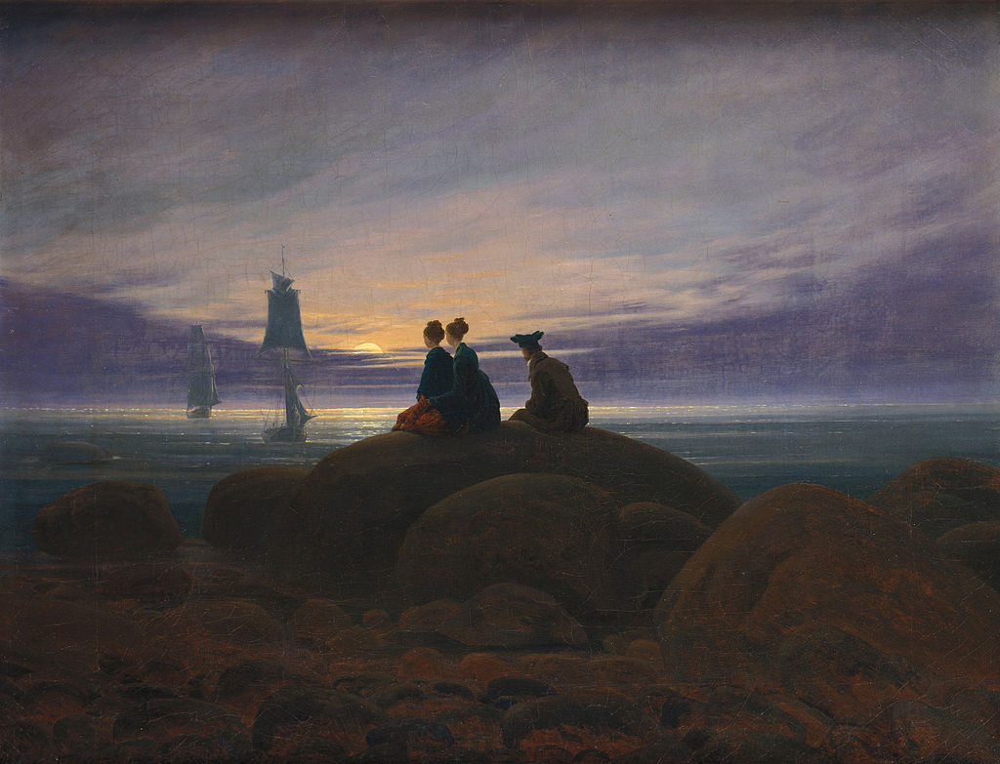

<head>
<meta charset="UTF-8" />
<meta name="keywords" content="drawing, painting" />
<meta name="description" content="drawings by Sunjy" />
<title>Sunjy</title>
<link rel="shortcut icon" type="image/x-icon" href="../../mImages/mCommon/favicon.ico" media="screen" />
<link rel="stylesheet" type="text/css" href="../../mCsses/mCommon/mCssA.css" />
<link rel="stylesheet" type="text/css" href="../../mCsses/mCommon/mCssB.css" />
<link rel="stylesheet" type="text/css" href="../../mCsses/mCommon/mCssC.css" />
<link rel="stylesheet" type="text/css" href="../../mCsses/mCommon/mCssD.css" />
<link rel="stylesheet" type="text/css" href="../../mCsses/mContent/mCssA.css" />
<link rel="stylesheet" type="text/css" href="../../mCsses/mContent/mCssB.css" />
<link rel="stylesheet" type="text/css" href="../../mCsses/mContent/mCssC.css" />
<link rel="stylesheet" type="text/css" href="../../mCsses/mContent/mCssD.css" />
</head>
<script type="text/javascript" src="../../mScripts/mContent/mContentAA.js" /></script>
<script type="text/javascript" src="../../mScripts/mContent/mContentAB.js" /></script>
<script type="text/javascript" src="../../mScripts/mContent/mContentAC.js" /></script>
<script type="text/javascript" src="../../mScripts/mContent/mContentAD.js" /></script>
<script type="text/javascript"></script> 
<script type="text/javascript">
document.write('<div class="mImgAbsolute"></div>');
/*
document.write('<p class="mFontSizeBColor" />From a white paper...</p>');
document.write('<table class="center"><tr><td>');
document.write('');
document.write('</td></tr></table>');
*/
</script>


<script type="text/javascript">
document.write('<p class="mFontSizeBColor" />Moonrise by the Sea</p>');
document.write('<p class="mFontSizeSColor" />“Moonrise by the Sea” by Caspar David Friedrich was painted in 1822 depicting a romantic seascape scene. Three young people, two women side by side and a man further back, are sitting on a large boulder by the sea.<br><br>They are silhouetted against the sky as they watch the moon rising to the east above a band of clouds. In the distance are two sailing vessels, ghosting on a light breeze.<br><br>The painting is a view of the Baltic Sea, near Friedrich’s birthplace in Swedish Pomerania.<br><br>This painting is held in the Alte Nationalgalerie in Berlin, a similarly named painting by Friedrich is at the Hermitage Museum in St Petersburg with is much larger and painted in 1821.<br><br>Swedish Pomerania<br><br>Swedish Pomerania was a Dominion under the Swedish Crown from 1630 to 1815, situated on what is now the Baltic coast of Germany and Poland.<br><br>After multiple wars, disputes, and treaties, the Congress of Vienna it transferred to Prussia in 1815.<br></p>');
document.write('<table class="center" /><tr><td>');
document.write('<br>They are silhouetted against the sky as they watch the moon rising to the east above a band of clouds. In the distance are two sailing vessels, ghosting on a light breeze.<br><br>The painting is a view of the Baltic Sea, near Friedrich’s birthplace in Swedish Pomerania.<br><br>This painting is held in the Alte Nationalgalerie in Berlin, a similarly named painting by Friedrich is at the Hermitage Museum in St Petersburg with is much larger and painted in 1821.<br><br>Swedish Pomerania<br><br>Swedish Pomerania was a Dominion under the Swedish Crown from 1630 to 1815, situated on what is now the Baltic coast of Germany and Poland.<br><br>After multiple wars, disputes, and treaties, the Congress of Vienna it transferred to Prussia in 1815.<br>" />');
document.write('</td></tr></table>');
</script>


